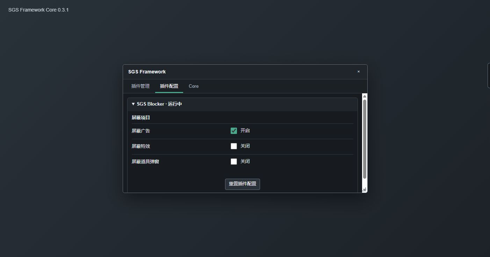

概览与界面
SGS Framework 由下载器在 Laya 初始化前注入。工程源码按 Downloader、Core 与各插件项目分别维护，发布时统一合并、压缩和变量混淆；浏览器取得的 Downloader、Core 与每个插件各自都是一个完整 JavaScript 文件。Core 统一管理生命周期、运行时事件、可逆 Hook、插件安装与配置、LocalStorage 前缀、版本检测和 Laya 底层访问。
屏幕边缘的 SGS 悬浮窗自动吸附左侧或右侧。自动隐藏开启时，只保留边缘感应区，鼠标进入当前侧边缘才显示；拖动后在边缘松开也会按该设置隐藏。点击悬浮窗可选择“选项”、切换自动隐藏，并查看不可点击的 Core 版本号。
选项窗口默认占视口宽高各 50%，可拖动和从右下角缩放。最小宽高为视口的 20%，同时保留 260×180 像素的可用下限；移动、缩放、视口变化和浏览器缩放后，窗口都会被约束在屏幕内。
窗口包含“插件管理”“插件配置”“Core”三个 Tab。“插件管理”显示插件名称、版本、ID、简介和更新/启停/删除操作，不重复显示安装时已经确认的能力列表，也不附加独立的运行中/已禁用状态文字；启停开关本身仍负责控制插件。Core Tab 的“Core 版本”区域同时显示版本检测与“开发者模式”开关。开关成功保存后，公共字段会立即更新；已经运行的插件可以监听对应事件，后续启动的插件可以直接读取当前值。

window.SgsFramework/script/plugin/index.json5000 ms / 请求一个入口一个 JavaScript安装与入口
- 在油猴脚本管理器中打开 download.mjs 并安装；该地址是构建后的单文件油猴脚本，不是工程源码目录。
- 下载器在
document-start安装 Laya 初始化屏障，优先请求本站core.mjs，失败后请求 GitHub 当前存在的main/framework/core.mjs；两个来源各自最多等待 5 秒。 - 远程请求都失败时，下载器先尝试页面 LocalStorage 缓存；仍不可用时显示“继续游戏 / 刷新重试”。选择继续时使用可用缓存，没有缓存则不加载 Framework。
- Core 注入完成后释放 Laya 屏障，恢复已启用插件并执行静默版本检测。
用户手册：https://sgs.senrax.com/
安装脚本：https://sgs.senrax.com/script/download.mjs
公开目录：https://sgs.senrax.com/script/在 https://web.sanguosha.com/login/index.html 登录页，Core 会显示只读版本标记，便于确认注入是否成功。
开发工作区位于 E:\ds-sgs\src。npm run build 生成与公开目录同构的 dist，npm run publish:check 只比较 Oracle 文件，npm run deploy 才会构建并发布。
Core API
window.SgsFramework 与 window.__SgsFramework 指向同一个实例。插件通过 context.framework 获得该实例；页面控制台也可以直接读取全局入口。
| 入口 | 暴露方法与定义 |
|---|---|
| Core | developerMode 是由 Core UI 控制的只读布尔字段，对应能力名 core.developer-mode；status() 返回版本、开发者模式、插件、Laya、事件监视、更新和 UI 状态；addDisposer(fn,label) 注册清理；dispose(reason) 停止插件并释放全部资源。 |
events | on(type,handler)、once、off、emit、clear、listenerCount。on/once 返回取消函数。 |
logger | scope(name) 创建作用域 Logger；info、warn、error 同时写控制台和 log 事件。 |
storage | scope(name)、get/set/remove、getJson/setJson、keys。Core 负责真实 LocalStorage 前缀与 JSON 序列化。 |
timers | setTimeout(fn,ms,label)、setInterval(fn,ms,label)，返回取消函数并参与 Core 热重载清理。 |
hooks | wrapMethod(owner,name,handler,{label})。Handler 接收 {original,args,thisArg,callOriginal}；返回的取消函数恢复包装前方法。 |
dom | createOverlay、createPanel、createButton、toast。创建结果包含元素与移除函数。 |
browser | openUrl、request、requestText、requestJson、requestHeaders。请求默认不带凭据、禁用缓存并在 5 秒后中止。 |
laya | getLaya()、getStage()、status()、whenReady()、walk()、find()、snapshot()。节点引用保持为原始 Laya 对象。 |
runtime | start()、stop()、poll()、status()、getBattle()，封装战斗、窗口和公开日志生命周期。 |
plugins | inspect/addFromUrl/install、enable/disable/remove、checkOne/checkUpdates/update、settings/config/invokeAction/list、插件源与孤儿配置管理方法。 |
update | check()、reload()、status()；reload 执行当前页面 Core 热替换。 |
ui | mount()、openWindow(tab)、closeWindow()、selectTab()、refresh()、confirmAction()、toast()、status()。 |
install(context) {
function applyDeveloperMode() {
if (context.framework.developerMode) {
// 创建或启用仅用于开发的行为。
} else {
// 关闭并清理仅用于开发的行为。
}
}
applyDeveloperMode();
context.addDisposer(
context.events.on("core:developer-mode-changed", applyDeveloperMode),
"developer-mode"
);
}插件安装时先读取 context.framework.developerMode，可以获得 Core 启动时恢复的值。运行期间切换开关时，字段先更新，再触发事件；只在动作执行时判断的代码也可以直接读取字段，不需要缓存副本。
插件定义
插件工程源码按项目放在 E:\ds-sgs\src，可以拆分为多个模块、数据文件和构建辅助代码。统一流水线用 esbuild 合并模块，再用 Terser 压缩与变量混淆。Core 面向的发布产物仍是一个可直接下载的经典 JavaScript 文件：文件开头保留 Header，正文调用 SgsFramework.plugins.define()，且不能依赖同项目的第二个 JavaScript 下载。
| Header | 含义 |
|---|---|
@id | 稳定且唯一的插件 ID；更新包必须保持一致。 |
@name / @version | 显示名称与可比较版本号。 |
@description | 安装确认框和插件列表中的简介。 |
@permissions | 逗号分隔的能力声明，仅披露，不构成沙箱。 |
@updateMode | default、header 或 api，不区分大小写。 |
@versionHeader | Header 模式读取的响应头，默认 x-sgs-plugin-version。 |
@versionApi | API 模式 JSON 地址；相对地址按插件 URL 解析。 |
// ==SgsPlugin==
// @id example.plugin
// @name Example Plugin
// @version 1.0.0
// @description Example description.
// @permissions core.events,browser.dom-overlay
// @updateMode default
// ==/SgsPlugin==
(() => {
SgsFramework.plugins.define({
id: "example.plugin",
manifest: {
name: "Example Plugin",
version: "1.0.0",
description: "Example description.",
permissions: ["core.events", "browser.dom-overlay"]
},
defaults: {},
settings: [],
install(context) {
const remove = context.events.on("battle:end", () => {});
context.addDisposer(remove, "battle-end");
return () => {};
}
});
})();context 提供 framework、id、manifest、sourceUrl、events、logger、storage、config、timers、hooks、dom、browser、laya、runtime 和 addDisposer。install 返回的函数也会在禁用、更新、删除或 Core 热替换时调用。
Header 在混淆前从入口文件提取并原样置于产物顶部，因此 Catalog 检查、首次安装确认和版本比较不需要理解混淆后的正文。公开文件使用既有 .mjs URL 保持更新兼容，但按经典脚本执行。
插件配置
插件声明配置分组、默认值和可选动作，Core 负责控件排版、保存、校验、错误提示与重置。每个插件可独立收起；没有配置项的插件显示“无可配置项”，也不显示重置按钮。
type | 值与触发行为 |
|---|---|
toggle | 保存布尔值；声明 onChange 时，在保存成功后调用对应动作。 |
button | action / onClick 指向插件动作；插件未启动时不可用。 |
text | 保存字符串；支持 inputType、数值范围、长度范围和多个正则 patterns。 |
select | 按 options: [{value,label}] 显示下拉列表并保存选中值；可声明 onChange。 |
custom | render / action 接收 Core 创建的 host；插件只拥有该 host 内部内容。 |
defaults: { enabled: true, mode: "safe" },
settings: [{
id: "general",
name: "General",
items: [
{ key: "enabled", name: "Enabled", type: "toggle", onChange: "apply" },
{ key: "mode", name: "Mode", type: "select", options: [
{ value: "safe", label: "Safe" },
{ value: "full", label: "Full" }
], onChange: "apply" }
]
}],
actions: { apply(context, value, key) {} }context.config.get/set/reset/defaults 与配置页共享同一状态。Core 先校验并序列化新值，再触发配置动作，因此动作读取 context.config 时已经是新值。首次安装没有历史配置或用户重置时，使用插件声明的 defaults。
AutoRewards 显示“领取周卡月卡、自动免费将池、自动免费祈福、自动官阶俸禄、自动签到、自动砍树”六个 Toggle。六项默认开启；免费常山战鼓没有独立开关，会在每次自动检查中处理。
AutoRewards 的“签到策略”下拉列表提供“不自动签到、自动签到-跳过试用、自动签到-跳过使用-月底领”。“自动签到”Toggle 是签到子系统总开关；下拉选择“不自动签到”也会停用整个签到子系统。“月底领”只在 +8 服务器日历的当月最后一天允许领取试用武将奖励，其他日期仍跳过。
Core Tab 的“开发者模式”是 Core 自身设置，不属于插件配置。切换它不修改任何插件的 defaults/settings；插件通过公共字段和 Core 事件决定开发专用行为。
更新检测
| 模式 | 请求与版本来源 |
|---|---|
default | GET 插件 JavaScript，读取响应体并解析 Header 的 @version。 |
header | 通过 Fetch 发送 HEAD，不读取响应体；读取 @versionHeader 指定的响应头。 |
api | GET @versionApi JSON；必须提供 version，可提供本次下载使用的 url。 |
Core 恢复插件后自动检测插件版本，同时检测自身版本。检测对象始终是 dist 发布的单文件产物，而不是工程目录中的模块。Core 版本来自混淆后仍保留的 SgsCore @version Header，不解析压缩正文中的变量声明；首个 Header 版本同时保留注释形式的兼容标记，使已安装的旧 Downloader/Core 也能识别并升级。插件管理页提供手动检测按钮；远程版本更高时，插件行显示更新按钮。Core 页显示当前/远程版本，并在有更新时显示热重载按钮。
插件更新会保存新源码、停止旧实例、执行新定义并恢复原启用状态。Core 热重载会释放旧 Core 的插件、Hook、定时器、监听器和 DOM，再由新 Core 从缓存源码恢复已启用插件。
跨域来源必须允许当前游戏页面读取响应。Header 模式若使用自定义响应头，还要通过 Access-Control-Expose-Headers 暴露该名称。
运行时事件
| 事件 | 触发证据与 Payload |
|---|---|
framework:ready | Core 服务和 UI 已发布；Payload 为 status() 快照。 |
core:developer-mode-changed | 用户成功切换开发者模式后触发；Payload 为 { enabled, previous }。事件处理器执行时，framework.developerMode 已经是 enabled。 |
battle:start | 有效可见的 TableGameScene/RogueLikeGameScene 且 manager.seats 存在；提供 scene、manager、sceneName、startedAt。 |
battle:end | Scene 离开、失去有效可见性、seats 消失或被替换；提供原 Scene/Manager、原因和结束时间。 |
battle:log | 来自公开 Laya HTML 战斗日志容器；提供 html、纯文本、节点和 Scene。 |
window:open | Stage 中有效可见的 Window/Dialog/Popup 节点出现；提供稳定对象 ID、原始节点和节点信息。 |
window:close | 此前可见窗口离开集合；提供同一对象 ID、原始节点和关闭时间。 |
| 插件事件 | plugin:installed/removed/started/stopped/updated、plugin:config-changed、plugin:config-reset。 |
Core 启动时从存储恢复开发者模式，并在恢复插件前公开该字段；启动恢复本身不触发变更事件。插件应在安装时读取一次字段，并在需要持续响应时注册 core:developer-mode-changed，同时把取消函数交给插件清理流程。
有效可见性会检查节点及父链的 visible、alpha、scaleX/scaleY 和 destroyed。Core 不通过 console.log 判断战斗，也不把可能残留的窗口注册表当作事实。
高层事件不足时，可从 framework.laya.getLaya()、getStage() 或事件 Payload 取得原始 Laya 对象并调用底层公开接口。
存储
sgs.framework.core.developer-mode
sgs.framework.ui.dock
sgs.framework.ui.window
sgs.framework.plugins.registry
sgs.framework.plugins.sources
sgs.framework.plugins.catalog-cache
sgs.framework.plugins.<pluginId>.code
sgs.framework.plugins.<pluginId>.config
sgs.framework.plugins.<pluginId>.data.*sgs.framework.core.developer-mode 保存 Core 开发者模式，缺失时按 false 处理。Core 启动时先读取该键，再创建插件上下文；切换时先写入该键，保存成功后才更新公共字段与发送变更事件。写入失败时字段保持原值，Toggle 恢复原状态并显示错误提示。
context.config 保存插件声明的配置对象；context.storage 保存插件自己的内部数据。插件只传相对键，Core 自动添加 plugins.<pluginId> 前缀并负责字符串或 JSON 序列化。Core 的停靠位置与窗口几何信息由 sgs.framework.ui.* 独立保存。
Core 启动时把历史双分隔符键（例如 ui..dock、data..runtime-source）迁移为单点键；如果单点键已经存在，以单点键为准。
删除插件会删除注册记录和源码缓存，但保留 .config 与 .data.*。Core 页的“检查已删除插件配置”按插件 ID 汇总这些孤儿键、数量和字符数；用户确认删除时只移除该插件的配置/数据，不影响已安装或被禁用插件。
插件源
插件管理页按来源分组，每个官方、第三方或手动来源都可收起。固定官方源 /script/plugin/index.json 只引用构建后的单文件产物，发布 SGS Game Model、SGS Blocker、SGS DebugTools 与 SGS AutoRewards。Game Model 为使旧记牌器原位升级，继续使用稳定 ID sgs.card-tracker；DebugTools 继续使用 sgs.automation，AutoRewards 使用 sgs.auto-rewards。
{
"name": "Source name",
"plugins": [
{ "id": "example.plugin", "url": "https://example/plugin.js" }
]
}第三方源可添加名称与 Catalog URL，并支持禁用、重命名和删除；删除来源不删除已经安装的插件。从 URL 安装时，Core 先下载并解析 Header，显示名称、版本、简介、来源 URL 和完整能力列表，用户确认后才执行代码。安装后的管理列表不重复能力标签或独立运行状态，只保留启停操作和需要处理的错误。Catalog 的 ID 与插件 Header/定义不一致时，安装校验失败。
官方插件
官方源提供 SGS Game Model、SGS Blocker、SGS DebugTools 与 SGS AutoRewards。它们使用普通插件相同的安装、启用、禁用、更新和删除流程；停止时释放所属 Hook、定时器、离屏对象、等待任务和可调用服务。
SGS Game Model
无配置项。插件 ID 仍为 sgs.card-tracker，发布文件 card-tracker.mjs 内嵌 gzip 压缩的完整 Game Model runtime，启用时才通过 Chrome 原生 DecompressionStream 解压并执行，不再下载或缓存第二个 card-tracker-runtime.js。它是无 UI、只读的牌局事实与推理核心：不创建 Overlay、旧侧栏、DOM 面板、Laya 节点、按钮或牌面描画。它只在有效可见的 TableGameScene 中同步服务器协议、牌堆数量、所有座位、公开区与可证明的运行时事实；离开牌局、更换 manager 或收到新开局协议时会建立全新 session，上一局的牌、顺序、弃牌和约束不会泄漏。
| 模型能力 | 当前行为 |
|---|---|
| 物理牌堆 | 按模式使用物理 CardID 集合。当前排位规则 22 使用标准 1 至 160；具有 PlayCardPile.List 的模式使用已证明的显式列表。无法证明模式牌堆时保持 unresolved，绝不把 2786 张全量卡表当作本局牌堆。 |
| 独立实体牌堆 | 技能自有、仍由真实 CardID 组成的有序牌堆使用规则作用域 key 和 physical-pile:<key> 区域单独建模，保存成员、顶/底、可见性、独立 epoch、回收策略与历史。takeFromPhysicalPile/putIntoPhysicalPile 产生正常的实体位置和手牌事实；shufflePhysicalPile 只清除该堆顺序并推进该堆 epoch，绝不会触发主牌堆耗尽、合并主弃牌堆或改变主牌堆概率。只有完整成员已证明时，洗牌后的 physicalPileNextProbability 才使用均匀分布；成员不完整则拒绝猜测。它与 ID 根本不是游戏牌的 entityPiles 分离。 |
| 耗尽与回收 | 牌离开后若牌堆恰好为 0，会立刻以当时仍在弃牌堆的牌建立下一 epoch；处理区中的牌不参加。一次多张取牌可保留旧牌堆前缀并跨 epoch 继续。纯“洗当前牌堆”只清除顺序，不会擅自合并弃牌堆。 |
| 顺序与区域 | 同时维护连续的已知顶/底和稀疏 knownRanks，支持已知实体牌插入第 N 位、窗口分顶底、公开翻牌直到命中及不足时落底。协议位置常量优先于 Taxonomy 提示；特殊区、处理区与移出游戏区保留 zoneParam，牌堆内重排不改变物理数量。 |
| 武将牌命名牌堆 | “田”“米”“锋”“笔”等武将牌上真实 CardID 不再合并成 general:<seat>。observeNamedCardZone 为每堆保存 zoneKind、pileKey、SkillID/规则身份或 zoneParam、承载座位/武将区、控制者与放置者、明确的无所有者语义、顺序、正反面、可见受众、授权观察席及逐牌显示状态；ownershipKnown 与 orderKnown 把“已证明无所有者/有顺序”同“尚无证据”分开。hostPlayerKey/hostAvatarKey/lifecycleScope 再区分当前武将附属堆与跨武将的玩家级保留区：同一玩家更换下一名武将时可更新 avatar 描述而保持同一物理堆。实时采集直接保留当前 H5 skillOutSideCardDict 的技能/ToZoneParam 数字 key。正 CardID 直接证明实体；仅有 CardId=0 时必须按审阅后的 SkillID 区分“隐藏实体牌数量”“无实体标记/状态”与“尚未判明”，只有第一类进入物理牌世界，后两类作为规则状态保存，绝不虚增牌数或污染概率。数字移出区 key 与协议 removed:<seat>:<zoneParam> 合并为同一区域，快照不会再覆盖协议精确位置。木牛等装备附属堆另存宿主 CardID、容量和跟随策略；宿主装备移动不会凭规则文本自动搬堆，只有权威宿主变更才由 rehostNamedCardZone 原子更新区域并保留前后历史。visibleZone 对未授权观察者只返回数量，不泄漏本地已知 CardID；后续观看只精化观察权限。牌进入判定处理、手牌、弃牌或移出区时移动同一 CardID 并清除旧堆显示状态。它与技能独立牌堆 physicalPiles、非游戏牌实体堆 entityPiles 均分离。 |
| 区域能力 | 装备栏位、判定区等是否可用/禁用/废除由 zoneCapabilities 单独保存，含座位、区域、栏位、能力、永久性与来源；它不会自动移动区域内现有牌。虚拟八阵/蛮甲等只建立能力或修正规则，不生成装备 CardID；“先移走装备再废除栏位”的两步也不会被压成一个模糊状态。 |
| 装备投影 | equipmentProjections 强制区分两类：physical-effective-identity 把一个已经位于装备区的真实 CardID 映射成当前生效的舰船/专属装备身份，源牌仍是唯一物理实体且离开绑定区域即失效；virtual-equipment 没有 CardID，默认也不占物理栏位。两类均保存宿主、槽位、可见性、来源和技能生命周期，并固定 createsPhysicalCard=false，因此不会把原装备、生成装备和“视为装备”复制成多张牌。 |
| 玩家手牌 | 所有座位都保存具体已知牌、属性约束与未知数量。客户端实际收到的敌方 CardID 会保留，并区分自己、规则授权、公开与原始服务器暴露来源；服务器未提供的身份不会被臆造。“无红桃”等约束绑定物理手牌代次，真正进出牌才使其失效；原地展示或授权观看只精化 CardID 知识，不推进代次、不伪造移动，并会用新身份复核旧约束。handKnowledgeHistory 与物理 handHistory 分开保存。数量转移账本即使 CardID 全部隐藏，也能记录最后手牌失去与首次获得；整手牌交换让双方各自只产生一次交换前到交换后的迁移，不制造临时空手。 |
| 原子整区交换 | exchangeZones 同时快照并交换两个非牌堆区域的完整内容，使用共同的 atomicOperationId 写入 zoneExchangeHistory。双方同为三张未知牌时，虽然交换前后知识外观一致，手牌代次仍会推进，旧属性约束仍会失效；已知 CardID 保留真实移动/驻留历史，位置不确定组的区域与配额按双射重映射。牌堆、弃牌堆和洗牌暂存区具有端点、epoch 与回收规则，不允许走该通用操作。 |
| 位置不确定组 | 从完整已知区域暗转一张牌时，不会把整组 CardID 重新视为可能在牌堆。模型保存“这些实体牌分布在若干区域并集”的守恒事实及已知分区数量；后续暗转扩大可能区域，公开实体会逐张解析，完整区域快照可排除该区域。只要所有可能区域都在牌堆外，整组牌仍从下一张概率中排除。若不确定性触及牌堆，只有同时证明牌堆配额和均匀/可交换选择时才计算：下一张按组配额求边际，检索概率按各组超几何分布卷积；选择分布未知时直接报告概率不可用，不擅自假设均匀。 |
| 弃牌与历史 | 当前弃牌堆成员与不可变的入堆历史分开保存；可查询“本回合进入且此刻仍在弃牌堆”的牌。区域事实与移动原因也分开：进入弃牌堆不等于被“弃置”。已验证的 movementReason、原因标签和原始 moveType 都会保留，但不会根据未证明的协议数值猜测语义。耗尽回收清空当前成员但保留历史；纯当前牌堆洗牌不清空弃牌堆。 |
| 连续状态与事件 | 每个已知实体牌保存连续区域驻留区间，以及移动、用牌、响应、抵消等事件账本。cardLocationAt 可按历史 eventIndex 或时间查询精确区域；若查询点正好是一次移动边界，moment=before 返回来源区，moment=after 返回目的区，不依赖内部日志插入顺序。同一 CardID 在同一粗粒度时间戳连续移动时，before 表示该时间点第一步之前，after 表示最后一步之后。已知移动会记录来源区、去向区、协议、回合与 gained-from-deck/entered-discard 等标签；整批离装等操作另有 movementGroupId、批次 sequenceIndex 及逐 CardID 来源/目标栏位，既保留完整批次，也保留逐装备离区触发顺序。“尝试弃置/移动”另存 pending、prevented、accepted、failed、cancelled、moved 状态；被防止时实体仍留原区，只有独立权威移动才把 movementApplied 置真并关联 movement ID。模型可以证明“从交付时起始终留在手牌”，并把“离开后返回”识别为新驻留；queryCurrentDiscard 会把事件条件与此刻弃牌堆成员显式相交。非单牌状态使用完整规则身份命名的 scalar/counter/set/ordered-list 账本，有序列表会保留重复项和顺序。 |
| 布尔总数约束 | 服务器只返回“若干猜测中答对 N 项”时，observeBooleanConstraint 保存每个命题、提交的期望真假、逐事实权威来源及精确/上下界总数；非法布尔值/计数直接拒绝，不会静默变成 false 或无约束。小规模集合枚举所有满足赋值，只有全部解一致时才产生单项 derivedValue/entailedFacts；大规模集合只做可靠的上下界传播。hand-any 只接受同 generation 的已知匹配 CardID、现有手牌约束或完整身份快照证明“不存在”，不完整隐藏手牌绝不产生负事实；仅观看会重算而不换代。无解时不导出推论。绑定目标手牌 generation 的约束在第一次成员变化时失效，晚到的旧代结果从建立时即不活动，但历史继续保留。 |
| 未来时点效果 | “下一结束阶段”“本回合结束时”“下个回合获得”等承诺进入独立 scheduledEffects 账本。每条保存精确事件/回合/阶段/座位触发条件、待发生效果、SkillID、规则身份与因果来源；匹配服务器事件后只由 pending 变为 due，不会自行摸牌、移动或结算。后续必须依据服务器结果显式 resolved/cancelled/expired。绑定实体装备区域或 whileSkillBindingKey 的预约会在实体离区或技能失去时失效，全部变化保留在 scheduledEffectHistory。 |
| 候选集与选择 | 服务器给出的随机锦囊候选、声明牌名、花色、点数、座位、技能或普通分支进入独立 choiceSets 账本，并强制保存 domain、顺序、完整性、选择上下限、可见范围、规则身份、来源与生命周期。effective-card-identity 中的数字只是牌身份/SkillID 候选，绝不进入牌堆；即使 domain 为 physical-card-id，候选也只是实体引用。resolveChoiceSet 仅记录被选索引和结果并固定 movementApplied=false，必须等独立服务器移动包才改变实体位置。低权威候选改写会被拒绝，阶段/回合/技能失效及所有结果进入 choiceSetHistory。 |
| 服务器随机结果 | selectionAgency=server-random 将随机结果与玩家选择分开；observeStochasticEvent 保存采样模型、候选权重、完整或仅谓词约束的总体、可能来源区（可为 unresolved）、来源是否已解明、观察席可见性与生命周期。“随机获得一张牌”可以在没有候选 CardID、没有来源区时保持 pending。stochasticProbability 只在候选总体完整且均匀/加权/确定性算法已明确时返回“下一次选择”的边际概率；unknown 绝不默认均匀，多结果的包含概率也不会由单抽边际伪造。resolveStochasticEvent 可记录服务器结果 CardID，但仍固定 movementApplied=false；之后必须用独立移动包证明来源并改变区域，获得后自动装备/使用则作为后续因果子事件。 |
| 规则修正账本 | 不移动牌但会改变合法目标、响应张数、伤害、次数/手牌上限或有效牌身份的规则，保存为身份化的 kind + subject + selector + effect。核心只接受已解析修正，不解释中文技能名；修正可分别绑定父 eventId、逐目标 targetEventId、targetSeat、通道或具体装备 CardID。同一父牌对目标1的“不可响应/伤害+1”不会泄漏到目标2；目标效果结算只清理该目标，父牌结算再清理其余子修正。其余修正按回合、阶段、游戏结束、实体离区或实体代次终止失效，所有注册、更新和失效保留历史。 |
| 技能绑定账本 | 基础、动态授予、使命派生、替换及失去的技能，都以精确 SkillID 绑定实际座位、武将、模式或显式实例；保存规则身份、资源版本、派生父技能和授予事件。相同中文名绝不合并，替换只移除协议明确列出的旧 SkillID。仅存在于配置或旧客户端类表、但本局未观察到绑定的历史技能不会自动生效；明确声明 whileSkillBindingKey 的状态/修正会随技能失去而失效，全部变化进入 skillBindingHistory。 |
| 结算因果图 | 主牌使用、逐目标效果、响应/抵消、插入的新用牌、伤害/回复与伤害来源替换按稳定事件 ID 建立父子和因果关系；角色字段区分 user、caster、responder、damageSource 与 target。当前精确目标集合以 useId 作用域的有序规则状态保存，append/remove 不会抹掉父事件已观察过的历史目标；逐目标子事件分别记录目标被移除、仍为目标但效果无效、响应及结算。额外结算是在同一父 useId 下新增有序效果子事件，不复制父实体或材料。重复协议只补充同一节点并保留观察历史，冲突写入 contradiction。这样可表达南蛮/万箭逐目标结算、决斗多轮响应、目标增减、效果无效及祸首改伤害来源，而不会把“没有响应”误判为敌方没有对应手牌。 |
| 拼点账本 | 拼点另存一组规范化事实：一个发起方、按顺序排列的各对手、公开实体 CardID、印刷点数、实际有效点数、逐对手胜负与结算阶段。多目标拼点只共享一张发起方实体牌，不会复制 CardID；牌在结果窗口仍按协议留在处理区，账本不会提前弃置。swapComparisonAssignments 表示亮牌前交换两张已提交实体的参与者归属，只交换逻辑 assignment 与随牌点数，不把它伪造成双方手牌移动，亮牌/出结果后拒绝再换。点数可能被技能修改时不以印刷点数擅自重算胜负。 |
| 实体与虚拟身份 | 卡牌行动明确区分实体牌、零子牌虚拟牌和单/多子牌转化牌，并分别保存声明、验明、最终有效身份、真实材料牌、额外成本牌、只用于花色/数量/合法性判断而不移动的参照牌、提供者与有效使用者。服务器新生成但不在初始牌堆清单中的真实 CardID，可用 observePhysicalCardDefinition 登记其权威牌名、花色、点数和类型；对象型协议牌只把该包真实携带的字段保存为独立 protocolDefinition，配置补齐的显示字段不会倒灌成服务器证据，纯 CardID 包也不会推造或重复登记牌面。定义先于同包移动入模；它进入动态物理总体，实际进入弃牌堆后也可参加后续耗尽回收。低权威技能文本不能覆盖服务器牌面，临时转化则只写有效属性层。虚拟逻辑 token 永远不会进入物理 CardID 集合；展示只增加已知身份而不移动，重铸也不会被当作用牌。后续规则引用“此牌”时，可由 cardActionMaterials 查询父行动对应的主实体/子牌组当前所在；moveCardActionMaterials 只有在全部对应实体仍被证明位于同一来源区时才整体移动，其中一张已被其他效果取得便拒绝，绝不按牌名补造或复制。额外成本和参照牌默认不属于移动组。 |
| 印刷、有效与表观牌面 | 固定配置/服务器实体定义是 printed；判定改色、转化等实际参与合法性与结算的是 effective；猜测流程中只对指定观察者伪装的牌名是 apparent。非全局视图显式绑定 scope、父 use/effect、目标座位、通道、observer、候选集或技能生命周期；无上下文的 effectiveCard(cardId) 只叠加全局视图，目标1的“杀视为决斗”不会泄漏到目标2。whileCausalEventId 会在该逐目标效果结算时单独失效。apparentCard 只向指定观察者叠加表观牌面，而 effectiveCard 永远忽略 apparent 视图。因此伪装不会改写 CardID、印刷牌名、伤害/合法性或牌堆概率。视图可随移动、阶段/回合、事件、技能失去、显式清除、绑定候选集或因果效果结算失效，历史保留在 cardViewHistory。 |
| 非游戏牌实体域 | 武将牌堆、候选武将区等使用独立的 entityPiles、entityLocations 与不可变移动历史。已安装在玩家主将/副将栏位的武将牌另用 GeneralCardEntity 保存 GeneralID、栏位、明暗置、印刷/当前技能与观察权限；未授权查询会隐藏身份。印刷技能不会自动视为当前有效，仍须独立技能绑定证据。即使武将 ID 与 CardID 数值相同，也绝不会改变物理牌堆数量、顶底顺序、弃牌堆或概率总体。 |
| 概率与检索 | 输出下一张 CardID、牌名、13 点数、4 花色、3 类型和 2 颜色的完整概率，并保留完整超几何命中尾部。检索成功张数与公开 CardID 数分开记录：只知道成功 1 张时先移动一张未知匹配牌，再推导短取负证据；该次移牌若触发回收，旧 epoch 的负证据不会污染新牌堆。多结果检索跨越耗尽点时必须提供逐 epoch 的明确分段：旧牌堆最后结果先离开、当时弃牌立即回收、剩余结果和短取证据才进入新 epoch；未分段的跨 epoch 批次在任何变更前拒绝，分段中途冲突则整体回滚。牌堆+弃牌堆等联合来源由只读查询分别报告候选；后续结果只有在来源由 CardID 位置或协议明确证明时才移动，来源不明就拒绝变更。联合失败永远不会被改写成牌堆单源负证据。所有负证据均经过幂等与物理容量检查。 |
| 端点首个匹配 | orderedMatchSearch 表示从牌顶或牌底取得第一张匹配牌、但所有跳过的不匹配牌仍留在原牌堆。若 CardID 的第 N 位可由顶/底或稀疏位置证明，只移除该实体并平移后续位置；位置未知时保守清除不能继续证明的稀疏顺序，不虚构扫描长度。它与“逐张亮出并移动”的 revealUntilResult 是两个不同操作。 |
| 重铸时序 | recast 不是用牌：先把来源已证明的实体成本以 recast 原因移入弃牌堆，再从牌堆顶摸指定张数，两步属于同一因果事务。若摸牌恰好取走旧牌堆最后一张，刚重铸的成本此时已经在当前弃牌堆，因此会正确进入立即洗牌；模型不会把“先摸后弃”的错误顺序漏掉这批实体。 |
| 判定结果层 | 判定实体、有效花色/点数与“判定成功”是三个独立层次。observeJudgementOutcome 保存基础成功值，invertJudgementOutcome 以唯一 layerId 追加成功/失败反转，不改 CardID、区域或牌面；重复收到同一层不会二次反转。所有层的奇偶性得到本地派生结果，服务器最终结果另存并优先成为 finalSuccess，因此版本差异可审计。该机制表达“判定结果反转”，不能误写成改判、换牌或改花色。 |
| 实体牌生命周期 | 霹雳车、宝梳、大舰等专属实体使用逐 CardID 生命周期，不与普通移出区混淆。destroyPhysicalCard/observePhysicalCardLifecycle 把同一实体移入类型化终端区，标记不可回收，从下一张牌概率与弃牌堆洗牌候选中排除，同时保留原移动和生命周期历史；不会复制一张“销毁后的装备”。终端区不计入活动牌世界分配，但仍可查询。重新供应必须有足够权威、显式允许及具体目的区，否则拒绝；成功时保留协议 CardID 并推进 physical generation。旧代实体标签、有效/表观牌面、装备投影、绑定修正和预约效果全部到期，历史父牌材料也不能移动新代同号实体；physicalCardGeneration 可直接查询当前代次。 |
| 谓词、标签与操作 | 单牌谓词支持 all/any/not、点数/花色/类型/有效伤害属性，以及由当前配置推导的伤害牌、延时/普通锦囊、Spell Class 和装备副类型；点数和子集由独立接口只判断必定/可能/不可能，不伪造服务器采样概率。实体标签可按物理牌永久、回合、轮次、阶段、指定事件或留在某区域期间生效，失效后进入历史；印刷牌面与临时有效属性分开保存。判定代替、判定交换、已知实体牌原子互换和整区同时交换是四种不同操作；前者涉及牌堆末牌时抑制中间态假回收，后者抑制中间态假空手。applyOperation 只执行已解析的具体操作，未解析序列整体回滚。 |
| 技能知识 | 3027 条用户基线与 3031 条当前目录分开记录，当前有 395 个分类签名、1835 条稳定语义审阅，p1-no-card-suspect 与 p2-identity-semantics 队列均已逐条审阅完毕，p3-generic-movement 仍剩 621 条。当前验证出的 raw cha_spell 缺口为 SkillID 3973、7111。每条生成记录都另存当前目录可取得的原始 owner 与全部 cha_spellextend 行，人工语义摘要不能覆盖 mode、difficulty、par1 等证据。若当前角色绑定与生成目录/H5 类存在、但 raw cha_spell 确实缺行，批次必须显式写入 rawChaSpellAbsenceVerified 与 current-config-gap 来源；校验结果单列缺口 ID，不能伪造配置行，也不能用 legacy profile 冒充 current。规则身份由 SkillID、产品/配置路径、当前目录 SHA-256 指纹、人工核对后的 owner 或 mode、sourceType 组成；不按中文名合并。目录加载、语义研究、可执行规则与运行时证据分别计数，Taxonomy 只用于研究排队。 |
const runtime = window.__SgsScripts;
runtime.manager.update();
const model = runtime.tracker.gameModel;
const state = model.snapshot();
const next = model.nextCardProbability({ endpoint: "top" });
model.recast({ eventId: "recast:<protocol-id>", actorSeat: 0, from: "hand:0", cardIds: [72], drawnCardIds: [91] });
model.orderedMatchSearch({ endpoint: "top", predicate: { color: "red" }, foundCount: 1, foundCardIds: [72], to: "hand:0" });
model.takeFromDeckAtRank({ cardId: 72, rank: 3, to: "hand:0" });
const discard = model.discardForTurn(4, 2);
const checkpoint = model.observeGameEvent({ type: "game:turn", turn: 4, round: 2 });
model.cardResidence(72);
model.cardLocationAt({ cardId: 72, eventIndex: movement.eventIndex, moment: "before" });
model.cardsContinuouslyInZone({ zoneKey: "hand:0", sinceEventIndex: checkpoint.eventIndex });
model.handTransitions({ seatIndex: 1, turn: 4, lostLastHand: true });
model.handKnowledgeChanges({ seatIndex: 1, knowledgeOnly: true });
model.exchangeZones({ leftZone: "hand:0", rightZone: "hand:1", atomicOperationId: "whole-hand:1" });
model.zoneExchanges({ atomicOperationId: "whole-hand:1" });
model.cardEvents({ cardId: 72, turn: 4, movementReason: "discard", moveType: 17, tags: ["discard-phase"] });
model.observeCausalEvent({ eventId: "response:<protocol-id>", eventType: "card:respond", parentEventId: "target-effect:<protocol-id>", roles: { responderSeat: 1 }, cardId: 72 });
model.queryCausalEvents({ rootEventId: "use:<protocol-id>" });
model.causalLineage("response:<protocol-id>");
model.observeCardAction({ eventId: "use:<protocol-id>", action: "use", identityKind: "virtual-with-subcards", subcards: [{ cardId: 72, fromZone: "hand:1", role: "material" }], effectiveIdentity: { name: "杀" }, providerSeat: 1, effectiveUserSeat: 0 });
model.queryCardActions({ identityKind: "virtual-with-subcards", effectiveName: "杀" });
model.cardActionMaterials("use:<protocol-id>", { zone: "discard" });
model.moveCardActionMaterials({ eventId: "use:<protocol-id>", from: "discard", to: "hand:0" });
model.observeComparison({ comparisonId: "pindian:<protocol-id>", kind: "pindian", initiator: { seat: 0, cardId: 72 }, opponents: [{ seat: 1, cardId: 91 }], status: "chosen" });
model.swapComparisonAssignments({ comparisonId: "pindian:<protocol-id>", opponentSeat: 1 });
model.queryComparisons({ kind: "pindian", seat: 1 });
model.queryCurrentDiscard({ eventAny: [{ turn: 4, tag: "used" }, { turn: 4, tag: "offset" }], movementReasons: ["card-use", "card-response"] });
model.queryCardSources({ zones: ["deck", "discard"], predicate: { name: "无中生有" } });
model.resolveCardSourceResult({ zones: ["deck", "discard"], predicate: { name: "无中生有" }, foundCount: 1, foundCardIds: [72], to: "hand:0" });
model.observeEntityPile({ key: "character-deck:mode:<id>", entityType: "general", count: 3, entityIds: [1001, 1002, 1003], complete: true });
model.moveEntityPile({ entityType: "general", from: "character-deck:mode:<id>", to: "general-zone:seat:0", count: 1, entityIds: [1001] });
model.observeLocationGroup({ cardIds: [72, 91, 98], zoneKeys: ["hand:0", "hand:1"], zoneCounts: { "hand:0": 2, "hand:1": 1 } });
model.activeLocationGroups({ cardId: 72 });
model.updateRuleState({ key: "rule:<identity>:used-names", kind: "ordered-list", operation: "append", value: "杀", lifecycle: "turn" });
model.registerRuleModifier({ key: "rule:<identity>:weapon:<cardId>:sha-limit", kind: "modify-limit", subject: "sha-use-count", effect: { delta: 3 }, lifecycle: "while-zone", whileCardId: 72, whileZone: "equip:0" });
model.observeChoiceSet({ key: "rule:<identity>:prompt:<id>", domain: "effective-card-identity", candidates: [101, 102, 103], exactSelections: 1, visibility: "holder-only" });
model.observeApparentCardAttributes({ cardId: 72, scope: "guessing-disguise", attributes: { name: "闪" }, observerSeats: [0, 2], whileChoiceSetKey: "rule:<identity>:prompt:<id>" });
model.apparentCard(72, { scope: "guessing-disguise", observerSeat: 0 }); // 不改变 effectiveCard
model.resolveChoiceSet({ key: "rule:<identity>:prompt:<id>", selectedIndex: 1 }); // 只记录选择，不移动实体牌
model.observeSkillBinding({ skillId: 21134, ownerSeat: 0, derivedFromSkillId: 21132, ruleIdentityKey: "sgs-web-h5:21134:owner:0" });
model.activeSkillBindings({ skillId: 21134, ownerSeat: 0 });
model.activeRuleModifiers({ subject: "sha-use-count", ownerSeat: 0 });
model.observeDeckRanks({ rank: 3, cardId: 72 });
model.insertAtRank({ cardId: 72, rank: 6, fallback: "bottom" });
model.tagCard({ cardId: 72, tag: "example" });
runtime.tracker.skillResearchCoverage();
runtime.tracker.skillKnowledgeFor(816);
runtime.tracker.applyResolvedSkillOperation(816, resolvedOperation);当前仍缺少把所有技能触发、选择、零结果反馈、稀疏位置、时序标签和规则 IR 自动绑定到对应协议，以及重连既有牌局时对弃牌堆与处理区的完整重建。现有入口只能接收已验证事实，不能把技能文本直接当成服务器事件。3031 条技能完成逐条语义审阅和运行时冲突复核前，不会宣称全部技能已经建模。
SGS Blocker
提供“屏蔽广告 / 屏蔽特效 / 屏蔽道具弹窗”三个独立开关。每项只操作已核对的当前 Laya 路径，不按宽泛类名隐藏节点，也不全局关闭 Tween、Timer、Animation 或渲染。
| 开关 | 作用范围 |
|---|---|
| 屏蔽广告 | 阻止 ModeScene.showAdView、隐藏当前广告视图、过滤类型 0x27cb 的军典入口，并通过公开关闭方法处理 AdPushWindow。 |
| 屏蔽特效 | 在 XMLHttpRequest.open 中只替换已确认的特效资源模式；保留铁索/酒白名单和两个已确认的结束回调路径。 |
| 屏蔽道具弹窗 | 处理 GetPropSpecialWindow、GeneralOpenResultWindow、SkinOpenResultWindowNew、OldbackOneClickDrawAwdWin 和 TianShuWindow type=6。 |
禁用、更新、删除 Blocker 或热替换 Core 时，每个 Hook 都恢复包装前的方法。
SGS DebugTools
无配置项。插件显示名为 DebugTools，但为使已安装的旧插件原位更新，ID 仍是 sgs.automation。它通过 plugins.invokeAction() 暴露四个调试函数；相同函数的并发调用复用同一 Promise。
| 函数 | 目标与结果 |
|---|---|
openRogueMap | 查找 modeId=151 并打开山河图；目标 Scene 已显示时返回 already-open。 |
openGeneralTrial | 查找 modeId=147 并打开武将试炼；试炼 Scene 或挑战窗口已显示时返回 already-open。 |
getCharacterInfo | 返回自己角色的 ID、昵称、等级/经验、元宝、绑定元宝、银两、在线时长、VIP、官阶、公会等白名单字段，不打开资料窗口。 |
claimDailyTaskRewards | 离屏循环领取 CanAward 的每日任务，再处理运行时提供的累计次数奖励；不假定任务数量，也不打开任务栏。 |
const invokeDebug = (action) => SgsFramework.plugins.invokeAction(
"sgs.automation", action
);
const rogue = await invokeDebug("openRogueMap");
const trial = await invokeDebug("openGeneralTrial");
const character = await invokeDebug("getCharacterInfo");
const dailyTasks = await invokeDebug("claimDailyTaskRewards");函数返回 ok、action、status 与对应的前后状态。插件未启用时返回 inactive。模式入口不选择武将、不开始挑战、不确认弹窗，也不继续战斗。
SGS AutoRewards
插件启用后每秒读取一次运行时管理器公开的 ServerTime/ServerDate。首次取得 +8 服务器时钟时执行一次启动检查；服务器日期变化时执行一次跨日检查。检查按“卡类、免费将池、免费祈福、免费常山战鼓、官阶俸禄、签到、发财树”顺序串行，正在执行时不会并发重复，期间检测到的跨日会排队补跑。
| 项目 | 检查与领取规则 |
|---|---|
| 月卡 / 周卡 | 先同步卡数据。启动检查只领取服务器状态标记可领的每日奖励和银两；跨日检查对仍有效的类型 3 月卡和类型 2 周卡各发送一次每日奖励及银两请求，以绕过跨日按钮状态未刷新的客户端问题。月卡随后独立领取全部满足条件的累计天数奖励；周卡没有累计路径。 |
| 免费将池 | 免费掉落 ID、免费 UI 标记、管理器免费状态与空闲请求池同时成立时，只用 Free_MianFei_Draw 抽取一次。 |
| 免费祈福 | 先同步全部轮次；只对 freeOpen、活动时间、抽取时间与 CanFreeBless 同时成立的轮次发送 count=1。 |
| 免费擂鼓 | 已加入公会且 CanDrum 时，重复常山战鼓的免费请求，直到 LeftFreeDrumTimes 为零或一次请求未确认。该项没有独立开关。 |
| 官阶俸禄 | 分别判断、领取并确认每日俸禄与每周俸禄；其中一项不存在不影响另一项。 |
| 签到 | 只处理正常免费签到状态；补签状态不点击。每日签到后或已签到时都检查累计签到奖励。试用武将按签到策略跳过；“月底领”只在 +8 服务器日历当月最后一天放行。 |
| 发财树 | 可砍时发送一次砍树请求；免费奖励物品存在且没有必须处理的树事件时再领奖。跨日时即使客户端仍缓存“已领”状态也会尝试一次砍树；启动时相信重登后状态。 |
插件提供六个 Toggle 与一个签到策略下拉列表，默认开启全部 Toggle，并默认“自动签到-跳过试用”；第三项按界面显示为“自动签到-跳过使用-月底领”。AutoRewards 不暴露手动领奖 Action；配置变更影响下一次启动/跨日自动检查。禁用插件会停止服务器时钟监听并取消后续等待。
权限与边界
插件权限是安装前披露，不是能力沙箱，也不会按权限名阻止执行。插件与页面脚本处于同一环境，可以读取运行时对象、调用公开方法、发出真实游戏请求或创建 DOM。只安装可信来源，并审查声明网络、Hook、Laya、游戏请求或 DOM 能力的代码。
开发者模式只是插件可读取的布尔信号，不授予权限、不隔离 Debug 代码，也不改变生命周期。使用该信号的插件必须自己在关闭时清理开发专用 Hook、监听器、定时器和 DOM，并把最终清理交给 Disposer。
Game Model 是无 UI 只读推理插件，不发送出牌、选牌或技能操作。它记录页面运行时实际包含的具体 CardID，并为敌方手牌区分公开/授权与原始服务器暴露来源；服务器未下发的牌仍是未知数量。概率结论会标注牌堆定义、物理数量、已知区域和交换性假设，未确认规则保留为开放问题。
Game Model 不把技能 Taxonomy 的 complete=true 当作机制完成。配置文本、语义研究、可执行规则与运行时证据独立统计；冲突不会被静默覆盖。插件不声明 browser.fetch、browser.local-storage 或 browser.dom-overlay，不为加载自身 runtime 发出网络请求，也不创建牌局 UI。
Blocker 只使用具体、可恢复且经过运行时核对的路径。DebugTools 的模式入口会改变当前界面，但只调用活动场分页和模式入口；不选择武将、不开始挑战、不确认弹窗，也不调用购买路径。入口条件不成立时返回结构化失败。
DebugTools 的 getCharacterInfo 只读取当前 Stage 中 IsSelf=true 的角色对象，并构造白名单结果。它不返回原始对象、Session、重连 Token、二级密码、账号散列或登录 IP；对象不可用时不打开资料窗口或发出资料查询。claimDailyTaskRewards 会发出真实领奖请求，但只处理每日且 CanAward 的任务和运行时累计奖励数组，不以固定任务数量判断正确性，也不把任务 View 加入 Stage。
AutoRewards 启用后会在首次取得服务器时间和每次 +8 服务器日期变化时发出真实请求。跨日卡类流程有意忽略客户端每日/银两按钮的本地可领标记：只要卡仍有效，就对月卡和周卡各发送一次对应请求；服务器仍负责最终资格校验。启动检查会先同步状态并避免对已领取卡奖励重复请求。月卡累计奖励始终按运行时的可领/已领数组逐项判断。
AutoRewards 不调用月卡/周卡购买或续费方法。武将抽取必须同时满足免费掉落 ID、免费 UI、管理器免费状态和请求空闲，并只使用 Free_MianFei_Draw；祈福必须通过免费配置与时间检查，只发送 count=1。两者均不调用付费抽取、灯购买、道具购买或元宝补足路径。
免费擂鼓只调用常山战鼓的 SendGuildDonate()，不调用亮银槌、鎏金锤、背包道具、SendGuildDrumUse() 或元宝确认。官阶只调用资格为真的每日/每周俸禄接口，不升级官阶，也不领取其他官阶活动奖励。
签到只在普通免费状态执行，补签状态不会点击，因此不会发起补签消耗。试用武将由 IsTryGeneralSkin 判定；跳过策略不会污染将池，“月底领”会在服务器当月最后一天放行该奖励。累计签到奖励仍会独立处理。
发财树只在免费奖励物品就绪时领奖，不购买物品。存在 HasTriggerEvent 时返回 event-required，不会自动打开、跳过或伪造事件窗口；该次可能需要用户手动处理后等待下一次自动检查。跨日的强制砍树请求只用于绕过客户端缓存的昨日状态，服务器仍负责资格校验。
AutoRewards 使用串行队列避免并发重复；禁用、更新、删除插件或热替换 Core 时停止时钟监听、取消等待并销毁离屏对象。已送达服务器的请求无法撤回，但清理后不会继续下一轮请求。DebugTools 停止后 Action 返回 inactive。
浏览器 Fetch 受 CORS 约束。第三方插件与 Catalog 来源需要允许游戏页面跨域访问；Header 更新模式还要显式暴露版本响应头。
官方发布器只上传本地 dist，并在同步后从公开 URL 下载每个 JavaScript 核对 SHA-256。发布使用显式命令，不运行常驻文件监视器；读写 Oracle 的权限不进入浏览器产物。
没有匹配的章节。